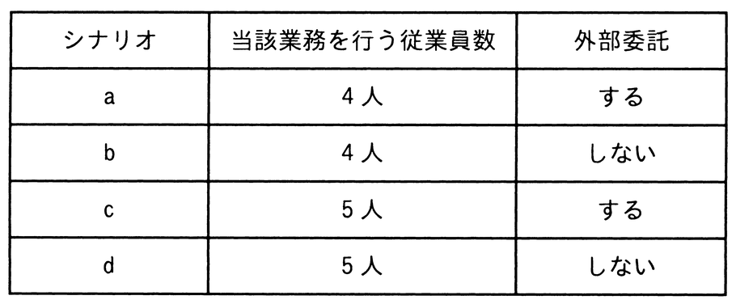

BPRによって業務を見直した場合，これまで従業員5人で年間計9,000時間掛かっていた業務が7,000時間で実現可能なことと，その7,000時間のうちの2,000時間分の業務は外部委託が可能なことが分かった。この結果を基にBPRを実施した次のシナリオaからdのうち，当該部門において，年間当たりの金額面の効果が最も高いものはどれか。なお，いずれのシナリオも年初から実施することとし，条件に記載した時間や費用以外は考慮しないものとする。
〔条件〕
（1） 年間計9,000時間の内訳は従業員1人当たり1,800時間とする。
（2） 従業員1人当たりの年間の人件費は600万円とする。
（3） 外部委託が可能な2,000時間分の業務を，外部委託した場合の年間費用は700万円とする。外部委託の契約は1年単位で年間費用の700万円は固定である。
（4） 従業員の空いた時間は別の付加価値業務が行えるようになり，従業員1人につき100時間当たり20万円の利益を得ることができる。
（5） 従業員4人で当該業務を行う場合は，残り1人は他部門に異動する。当該部門では，1人分の人件費の削減効果だけを考慮する。
（6） BPR実施後，当該業務に関わらない従業員の人件費は金額面の効果とみなす。

ア シナリオa
イ シナリオb
ウ シナリオc
エ シナリオd
31